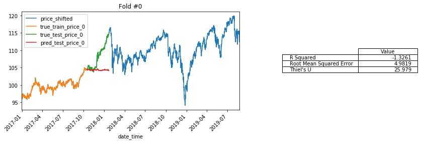
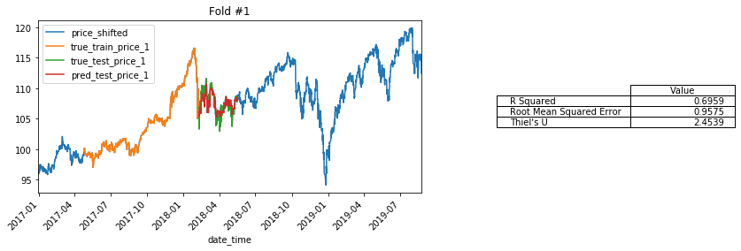
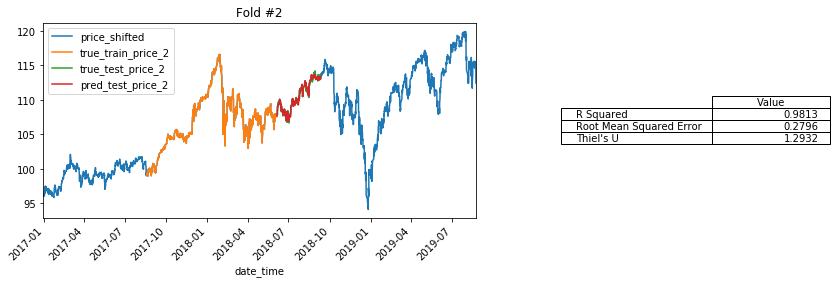
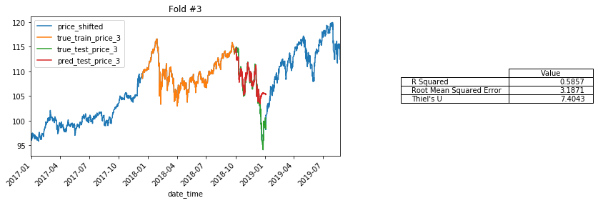
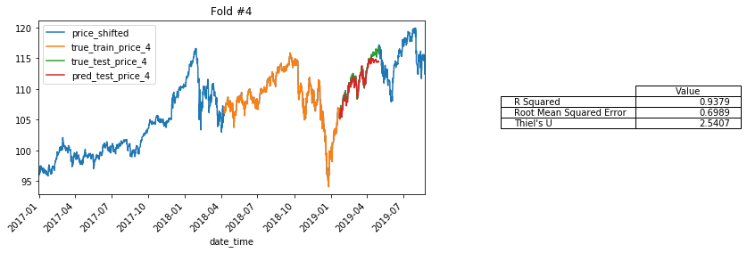

Custom BlockTimeSeriesSplit Class for K-Fold Validation of Time Series#
BOOKMARKS:
Defining Class BlockTimeSeriesSplit
Using BlockTimeSeriesSplit
# ## IMPORT CUSTOM CAPSTONE FUNCTIONS
# import functions_combined_BEST as ji
# from functions_combined_BEST import ihelp, ihelp_menu,\
# reload, inspect_variables
import pandas as pd
import numpy as np
import matplotlib.pyplot as plt
# ## IMPORT MY PUBLISHED PYPI PACKAGE
# import bs_ds as bs
# from bs_ds.imports import *
# Suppress warnings
import warnings
warnings.filterwarnings('ignore')
#Set pd.set_options for tweet visibility
pd.set_option('display.max_colwidth',100)
pd.set_option('display.max_columns',50)
def BlockTimeSeriesSplit#
from sklearn.model_selection._split import _BaseKFold
class BlockTimeSeriesSplit(_BaseKFold): #sklearn.model_selection.TimeSeriesSplit):
"""A variant of sklearn.model_selection.TimeSeriesSplit that keeps train_size and test_size
constant across folds.
Requires n_splits,train_size,test_size. train_size/test_size can be integer indices or float ratios """
def __init__(self, n_splits=5,train_size=None, test_size=None, step_size=None, method='sliding'):
super().__init__(n_splits, shuffle=False, random_state=None)
self.train_size = train_size
self.test_size = test_size
self.step_size = step_size
if 'sliding' in method or 'normal' in method:
self.method = method
else:
raise Exception("Method may only be 'normal' or 'sliding'")
def split(self,X,y=None, groups=None):
import math
method = self.method
## Get n_samples, trian_size, test_size, step_size
n_samples = len(X)
test_size = self.test_size
train_size =self.train_size
## If train size and test sze are ratios, calculate number of indices
if train_size<1.0:
train_size = math.floor(n_samples*train_size)
if test_size <1.0:
test_size = math.floor(n_samples*test_size)
## Save the sizes (all in integer form)
self._train_size = train_size
self._test_size = test_size
## calcualte and save k_fold_size
k_fold_size = self._test_size + self._train_size
self._k_fold_size = k_fold_size
indices = np.arange(n_samples)
## Verify there is enough data to have non-overlapping k_folds
if method=='normal':
import warnings
if n_samples // self._k_fold_size <self.n_splits:
warnings.warn('The train and test sizes are too big for n_splits using method="normal"\n\
switching to method="sliding"')
method='sliding'
self.method='sliding'
if method=='normal':
margin = 0
for i in range(self.n_splits):
start = i * k_fold_size
stop = start+k_fold_size
## change mid to match my own needs
mid = int(start+self._train_size)
yield indices[start: mid], indices[mid + margin: stop]
elif method=='sliding':
step_size = self.step_size
if step_size is None: ## if no step_size, calculate one
## DETERMINE STEP_SIZE
last_possible_start = n_samples-self._k_fold_size #index[-1]-k_fold_size)\
step_range = range(last_possible_start)
step_size = len(step_range)//self.n_splits
self._step_size = step_size
for i in range(self.n_splits):
if i==0:
start = 0
else:
start = prior_start+self._step_size #(i * step_size)
stop = start+k_fold_size
## change mid to match my own needs
mid = int(start+self._train_size)
prior_start = start
yield indices[start: mid], indices[mid: stop]
Load/process test data#
df_combined = pd.read_csv('data/__combined_stock_data_with_tweet_preds.csv', index_col=0,parse_dates=True)
model_col_list = ['price','price_shifted', 'ma7', 'ma21', '26ema', '12ema', 'MACD', '20sd', 'upper_band','lower_band', 'ema', 'momentum',
'has_tweets','num_tweets','case_ratio', 'compound_score','pos','neu','neg','sentiment_class',
'pred_classes','pred_classes_int','total_favorite_count','total_retweet_count']
df_combined = ji.set_timeindex_freq(df_combined,fill_nulls=False)
df_combined.sort_index(inplace=True, ascending=True)
df_combined['price_shifted'] =df_combined['price'].shift(-1)
df_to_model = df_combined[model_col_list].copy()
del df_combined
# df_to_model.head()
Index When: Freq: Index Start Index End:
Pre-Change None 2016-12-29 15:30:00 2019-08-23 15:30:00
[i] Post-Change <CustomBusinessHour: CBH=09:30-16:30> 2016-12-29 15:30:00 2019-08-23 15:30:00
[i] Filled 0# of rows using method ffill
Cols with Nulls:
source 3500
is_retweet 3509
id_str 3500
tweet_times 3500
group_content 3500
content_cleaned 3506
content_min_clean 3506
content_cleaned_stop 3521
cleaned_stopped_lemmas 3521
dtype: int64
| price | ma7 | ma21 | 26ema | 12ema | MACD | 20sd | upper_band | lower_band | ema | momentum | date_time.1 | int_tweets_for_stocks | int_bins | stock_times | source | is_retweet | id_str | tweet_times | num_tweets | total_retweet_count | total_favorite_count | group_content | has_tweets | has_stocks | has_both | has_RT | starts_RT | content_starts_RT | content_cleaned | content_min_clean | case_ratio | content_hashtags | hashtag_strings | content_mentions | mention_strings | content_cleaned_stop | content_cleaned_stop_tokens | cleaned_stopped_lemmas | sentiment_scores | compound_score | sentiment_class | neg | neu | pos | pred_classes_int | pred_classes | filled_timebin | |
|---|---|---|---|---|---|---|---|---|---|---|---|---|---|---|---|---|---|---|---|---|---|---|---|---|---|---|---|---|---|---|---|---|---|---|---|---|---|---|---|---|---|---|---|---|---|---|---|---|
| date_time | ||||||||||||||||||||||||||||||||||||||||||||||||
| 2016-12-29 15:30:00 | 96.27 | 96.864898 | 96.277007 | 96.573856 | 96.730494 | 0.156639 | 1.002051 | 98.281110 | 94.272904 | 96.263988 | 89.27 | 2016-12-29 15:30:00 | (2016-12-29 14:30:00, 2016-12-29 15:30:00] | 5 | 2016-12-29 15:30:00 | Twitter for iPhone | False | 814484710025994241 | 2016-12-29 14:54:21 | 1.0 | 11330.0 | 45609.0 | My Administration will follow two simple rules: https://t.co/ZWk0j4H8Qy | 1 | True | True | False | False | [] | My Administration will follow two simple rules: | my administration will follow two simple rules | 0.04167 | [] | [] | administration follow two simple rules | ['administration', 'follow', 'two', 'simple', 'rules'] | administration follow two simple rule | {'neg': 0.0, 'neu': 1.0, 'pos': 0.0, 'compound': 0.0} | 0.0 | 2 | 0.0 | 1.0 | 0.0 | 0 | neg | False | ||
| 2016-12-30 09:30:00 | 96.38 | 96.850204 | 96.293537 | 96.571218 | 96.721997 | 0.150779 | 0.980655 | 98.254848 | 94.332227 | 96.341329 | 89.38 | 2016-12-30 09:30:00 | (2016-12-30 08:30:00, 2016-12-30 09:30:00] | 23 | 2016-12-30 09:30:00 | NaN | NaN | NaN | NaN | 0.0 | 0.0 | 0.0 | NaN | 0 | True | False | False | False | [] | NaN | NaN | 0.00000 | [] | [] | NaN | [] | NaN | {'neg': 0.0, 'neu': 0.0, 'pos': 0.0, 'compound': 0.0} | 0.0 | 1 | 0.0 | 0.0 | 0.0 | 1 | no_change | False | ||
| 2016-12-30 10:30:00 | 96.21 | 96.831633 | 96.307891 | 96.566317 | 96.709593 | 0.143275 | 0.959724 | 98.227340 | 94.388442 | 96.253776 | 89.21 | 2016-12-30 10:30:00 | (2016-12-30 09:30:00, 2016-12-30 10:30:00] | 24 | 2016-12-30 10:30:00 | NaN | NaN | NaN | NaN | 0.0 | 0.0 | 0.0 | NaN | 0 | True | False | False | False | [] | NaN | NaN | 0.00000 | [] | [] | NaN | [] | NaN | {'neg': 0.0, 'neu': 0.0, 'pos': 0.0, 'compound': 0.0} | 0.0 | 1 | 0.0 | 0.0 | 0.0 | 1 | no_change | False | ||
| 2016-12-30 11:30:00 | 96.34 | 96.814286 | 96.322653 | 96.563255 | 96.700645 | 0.137390 | 0.938272 | 98.199196 | 94.446110 | 96.311259 | 89.34 | 2016-12-30 11:30:00 | (2016-12-30 10:30:00, 2016-12-30 11:30:00] | 25 | 2016-12-30 11:30:00 | NaN | NaN | NaN | NaN | 0.0 | 0.0 | 0.0 | NaN | 0 | True | False | False | False | [] | NaN | NaN | 0.00000 | [] | [] | NaN | [] | NaN | {'neg': 0.0, 'neu': 0.0, 'pos': 0.0, 'compound': 0.0} | 0.0 | 1 | 0.0 | 0.0 | 0.0 | 1 | no_change | False | ||
| 2016-12-30 12:30:00 | 96.25 | 96.794694 | 96.336531 | 96.559027 | 96.689742 | 0.130715 | 0.912397 | 98.161325 | 94.511736 | 96.270420 | 89.25 | 2016-12-30 12:30:00 | (2016-12-30 11:30:00, 2016-12-30 12:30:00] | 26 | 2016-12-30 12:30:00 | NaN | NaN | NaN | NaN | 0.0 | 0.0 | 0.0 | NaN | 0 | True | False | False | False | [] | NaN | NaN | 0.00000 | [] | [] | NaN | [] | NaN | {'neg': 0.0, 'neu': 0.0, 'pos': 0.0, 'compound': 0.0} | 0.0 | 1 | 0.0 | 0.0 | 0.0 | 1 | no_change | False |
Using Pipeline to Prepare Data for Modeling#
Note: this section was me learning to using Pipelines and ColumnTransformer. It is used for processing the data but is NOT meant to be an example.
## Using ColumnTransformer
from sklearn.model_selection import TimeSeriesSplit,train_test_split, GridSearchCV,cross_val_score,KFold
from sklearn.pipeline import Pipeline
from sklearn.preprocessing import StandardScaler, OneHotEncoder,MinMaxScaler
from sklearn.compose import ColumnTransformer, make_column_transformer
from sklearn.pipeline import make_pipeline
from sklearn.model_selection import train_test_split
from sklearn.impute import SimpleImputer
import xgboost as xgb
target_col= 'price_shifted'
## Sort_index
cols_to_drop =['price','pred_classes_int']
cols_to_drop.append(target_col)
features = df_to_model.drop(cols_to_drop, axis=1)
target = df_to_model[target_col]
## Get boolean masks for which columns to use
numeric_cols = features.dtypes=='float'
category_cols = ~numeric_cols
# target_col = df_to_model.columns=='price_shifted'
price_transformer = Pipeline(steps=[
('scaler',MinMaxScaler())
])
## define pipeline for preparing numeric data
numeric_transformer = Pipeline(steps=[
# ('imputer',SimpleImputer(strategy='median')),
('scaler',MinMaxScaler())
])
category_transformer = Pipeline(steps=[
# ('imputer',SimpleImputer(missing_values=np.nan,
# strategy='constant',fill_value='missing')),
('onehot',OneHotEncoder(handle_unknown='ignore'))
])
## define pipeline for preparing categorical data
preprocessor = ColumnTransformer(remainder='passthrough',
transformers=[
('num',numeric_transformer, numeric_cols),
('cat',category_transformer,category_cols)])
### ADDING MY OWN TRANSFORMATION SO CAN USE FEATURE IMPROTANCE
df_tf =pd.DataFrame()
## Define Number vs Category Cols
num_cols_list = numeric_cols[numeric_cols==True]
cat_cols_list = category_cols[category_cols==True]
for col in df_to_model.columns:
if col in num_cols_list:
# print(f'{col} is numeric')
vals = df_to_model[col].values
tf_num = numeric_transformer.fit_transform(vals.reshape(-1,1))
try:
df_tf[col] = tf_num.flatten()
# print(f"{col} added")
except:
continue
# print(f'Error flattening {col}, shape={tf_num.shape}')
# print(tf_num.shape)
# print(tf_num[:10])
if col in cat_cols_list:
# print(f'{col} is categorical')
df_temp = pd.get_dummies(df_to_model[col])#DataFrame(data=tf_cats[:],index=df_to_model.index)
df_tf = pd.concat([df_tf,df_temp],axis=1)
df_tf.head()
| ma7 | ma21 | 26ema | 12ema | MACD | 20sd | upper_band | lower_band | ema | momentum | 0 | 1 | 0 | 1 | 2 | neg | no_change | pos | |
|---|---|---|---|---|---|---|---|---|---|---|---|---|---|---|---|---|---|---|
| 0 | 0.018791 | 0.000000 | 0.003526 | 0.010402 | 0.686492 | 0.141494 | 0.033515 | 0.036878 | 0.073543 | 0.083656 | NaN | NaN | NaN | NaN | NaN | NaN | NaN | NaN |
| 1 | 0.018152 | 0.000739 | 0.003403 | 0.010025 | 0.685331 | 0.136876 | 0.032455 | 0.039368 | 0.076574 | 0.087916 | NaN | NaN | NaN | NaN | NaN | NaN | NaN | NaN |
| 2 | 0.017344 | 0.001380 | 0.003176 | 0.009475 | 0.683844 | 0.132358 | 0.031345 | 0.041728 | 0.073142 | 0.081332 | NaN | NaN | NaN | NaN | NaN | NaN | NaN | NaN |
| 3 | 0.016590 | 0.002040 | 0.003035 | 0.009078 | 0.682678 | 0.127728 | 0.030208 | 0.044149 | 0.075395 | 0.086367 | NaN | NaN | NaN | NaN | NaN | NaN | NaN | NaN |
| 4 | 0.015738 | 0.002660 | 0.002839 | 0.008594 | 0.681355 | 0.122143 | 0.028679 | 0.046905 | 0.073795 | 0.082881 | NaN | NaN | NaN | NaN | NaN | NaN | NaN | NaN |
Using BlockTimeSeriesSplit#
## BlockTimeSeriesSplit
split_ts = BlockTimeSeriesSplit(n_splits = 5, train_size=0.3,test_size=0.1,method='sliding')#train_size=840, test_size=10*7)
master_date_index=df_to_model.index.to_series()
n=0
dashes = '---'*20
for train_index, test_index in split_ts.split(df_to_model):
print(f'\n{dashes}\nsplit {n}')
train_date_index = master_date_index.iloc[train_index]
test_date_index = master_date_index.iloc[test_index]
ji.index_report(train_date_index)
ji.index_report(test_date_index)
n+=1
------------------------------------------------------------
split 0
------------------------------------------------------------
INDEX REPORT:
------------------------------------------------------------
* Index Endpoints:
2016-12-29 15:30:00 -- to -- 2017-10-17 09:30:00
* Index Freq:
<CustomBusinessHour: CBH=09:30-16:30>
------------------------------------------------------------
INDEX REPORT:
------------------------------------------------------------
* Index Endpoints:
2017-10-17 10:30:00 -- to -- 2018-01-22 09:30:00
* Index Freq:
<CustomBusinessHour: CBH=09:30-16:30>
------------------------------------------------------------
split 1
------------------------------------------------------------
INDEX REPORT:
------------------------------------------------------------
* Index Endpoints:
2017-04-25 14:30:00 -- to -- 2018-02-08 15:30:00
* Index Freq:
<CustomBusinessHour: CBH=09:30-16:30>
------------------------------------------------------------
INDEX REPORT:
------------------------------------------------------------
* Index Endpoints:
2018-02-09 09:30:00 -- to -- 2018-05-16 15:30:00
* Index Freq:
<CustomBusinessHour: CBH=09:30-16:30>
------------------------------------------------------------
split 2
------------------------------------------------------------
INDEX REPORT:
------------------------------------------------------------
* Index Endpoints:
2017-08-18 13:30:00 -- to -- 2018-06-05 14:30:00
* Index Freq:
<CustomBusinessHour: CBH=09:30-16:30>
------------------------------------------------------------
INDEX REPORT:
------------------------------------------------------------
* Index Endpoints:
2018-06-05 15:30:00 -- to -- 2018-09-10 14:30:00
* Index Freq:
<CustomBusinessHour: CBH=09:30-16:30>
------------------------------------------------------------
split 3
------------------------------------------------------------
INDEX REPORT:
------------------------------------------------------------
* Index Endpoints:
2017-12-13 12:30:00 -- to -- 2018-09-28 13:30:00
* Index Freq:
<CustomBusinessHour: CBH=09:30-16:30>
------------------------------------------------------------
INDEX REPORT:
------------------------------------------------------------
* Index Endpoints:
2018-09-28 14:30:00 -- to -- 2019-01-03 13:30:00
* Index Freq:
<CustomBusinessHour: CBH=09:30-16:30>
------------------------------------------------------------
split 4
------------------------------------------------------------
INDEX REPORT:
------------------------------------------------------------
* Index Endpoints:
2018-04-09 11:30:00 -- to -- 2019-01-23 12:30:00
* Index Freq:
<CustomBusinessHour: CBH=09:30-16:30>
------------------------------------------------------------
INDEX REPORT:
------------------------------------------------------------
* Index Endpoints:
2019-01-23 13:30:00 -- to -- 2019-04-30 12:30:00
* Index Freq:
<CustomBusinessHour: CBH=09:30-16:30>
from sklearn.model_selection import TimeSeriesSplit, cross_val_score
import xgboost as xgb
from xgboost import plot_importance,plot_tree
reg= xgb.XGBRegressor(random_state=42, n_estimators=500)
# split_ts = TimeSeriesSplit(n_splits=5)#,max_train_size=7*5*6)
split_ts = BlockTimeSeriesSplit(n_splits=5,train_size=0.3,test_size=0.1,method='normal')#train_size=7*5*4*3, test_size = 7*10)
results_list=[]
k=0
date_index = features.index.to_series()
for train_index, test_index in split_ts.split(features):
df_train = features.iloc[train_index]
df_test = features.iloc[test_index]
y_train = target.iloc[train_index].values
y_test = target.iloc[test_index].values
train_date_index = date_index.iloc[train_index]
test_date_index = date_index.iloc[test_index]
## Fitting preprocessor to training data, transforming both
preprocessor.fit(features)
X_train = preprocessor.transform(df_train)
X_test = preprocessor.transform(df_test)
reg.fit(X_train, y_train)
pred = reg.predict(X_test)
true_train_series = pd.Series(y_train, index=train_date_index,name='true_train_price')
true_test_series = pd.Series(y_test, index=test_date_index,name='true_test_price')
pred_price_series = pd.Series(pred,index=test_date_index,name='pred_test_price')#.plot()
df_xgb = pd.concat([true_train_series,true_test_series,pred_price_series],axis=1)
try:
df_results = ji.evaluate_regression(true_test_series,pred_price_series,show_results=False);
except:
print(f"Trouble with k={k}")
finally:
fold_dict = {'k':k,
'train_index':train_date_index,
'test_index':test_date_index,
'results':df_results,
'df_model':df_xgb,
'model':reg}
results_list.append(fold_dict)
k+=1
<IPython.core.display.Markdown object>
<IPython.core.display.Markdown object>
<IPython.core.display.Markdown object>
<IPython.core.display.Markdown object>
<IPython.core.display.Markdown object>
Visualizing Train/Test Splits and Predictions#
from pandas import plotting
## PLOT ALL TRAIN/TEST SAMPLES ON ONE PLT
for i in range(len(results_list)):
## get results items
k = results_list[i]['k']
df_model = results_list[i]['df_model'].copy()#
df_results = results_list[i]['results']
## rename columns to identify on same plot
new_colnames = df_model.columns+f"_{k}"
df_model.columns = new_colnames
## add to df_ind_plots and plot
df_ind_plots = pd.concat([target.copy(),df_model],axis=1) # reset each time
## Create fig, axes # display(df_results.style.set_caption(f'Fold#{i}'))
ax1= plt.subplot2grid((1,3),(0,0), colspan=2)
ax2 =plt.subplot2grid((1,3),(0,2), colspan=1)
ax2.axis('off')
fig = plt.gcf()
# Plot data
df_ind_plots.plot(title=f'Fold #{k}',rot=45,figsize=(12,4),ax=ax1) #table=df_results)
# Plot results table
plotting.table(ax2, colWidths=[0.6, 0.2],data=df_results,loc='right')
plt.show()




